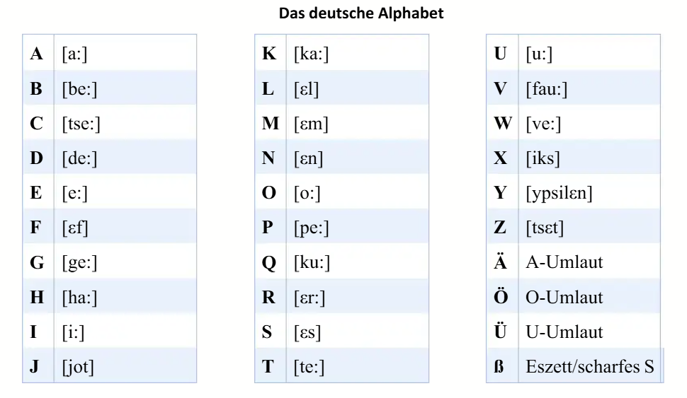

Das deutsche Alphabet
În această lecție vei învăța alfabetul limbii germane și pronunția sunetelor speciale: Umlaute și Doppellaute.
Umlaute
- ä — der Lärm, der Käse, die Säge, das Gefäß
- ü — die Überraschung, das Frühstück
- ö — das Öl, Österreich, die Lösung
- ß — die Straße
Se citește ca „s”. În germană se numește „scharfes s” și există doar ca literă mică.
Doppellaute (Diftongi)
- au — das Auto, laut, kaufen, laufen
- ei (ai) — das Ei, der Eimer, die Meinung, weinen, der Reis, der Preis
- eu (oi) — die Leute, heute, Europa, neu
- ie (ii) — exprimă un „i” lung: der Frieden, die Miete, liegen
[Traducere: Se folosește pentru a pronunța „i” mai lung decât de obicei.] - ai — der Mais, der Kaiser, der Mai, der Hai, Raimund
- äu (oi) — die Mäuse, die Bäume, die Häuser, die Träume, läuten, häufig
Alte combinații importante
- ch — die Milch, machen, lachen, brechen, ich
- sch (ș) — das Schloss, Schule, Schweiz, Schach
- st (șt) — der Stein, stehen, die Stadt, der Staat
- sp (șp) — die Speise, spielen, spät, sprechen, Sport
- tt — pronunțat rapid: die Mitte, die Bitte, das Bett, die Butter
- pp — pronunțat rapid: die Gruppe, die Puppe, die Lippe, die Suppe, die Kappe
⚠️ Foarte important!
Groß- und Kleinschreibung — Scrierea cu majusculă:
- Nomen/Substantive (substantive)
- Namen/Eigennamen (nume proprii)
- Satzbeginn (începuturile de propoziții)
- Länder, Städte, Kontinente, Dörfer (țări, orașe, continente, sate)
- Höflichkeitsformen (forme de politețe)
Toate acestea se scriu cu majusculă în limba germană!